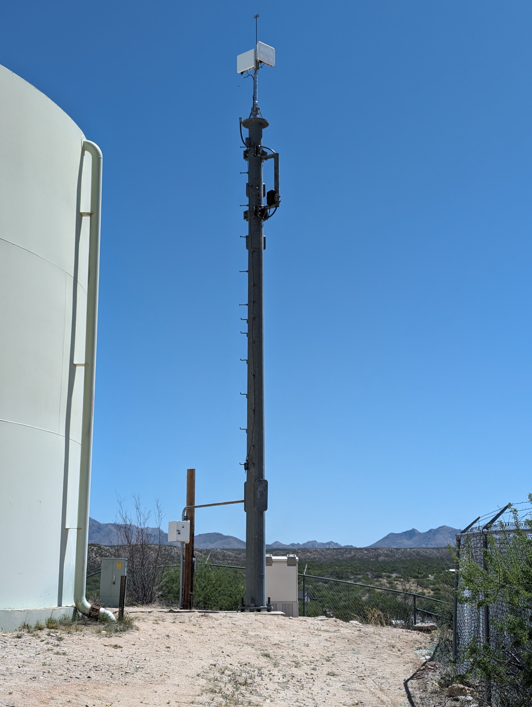
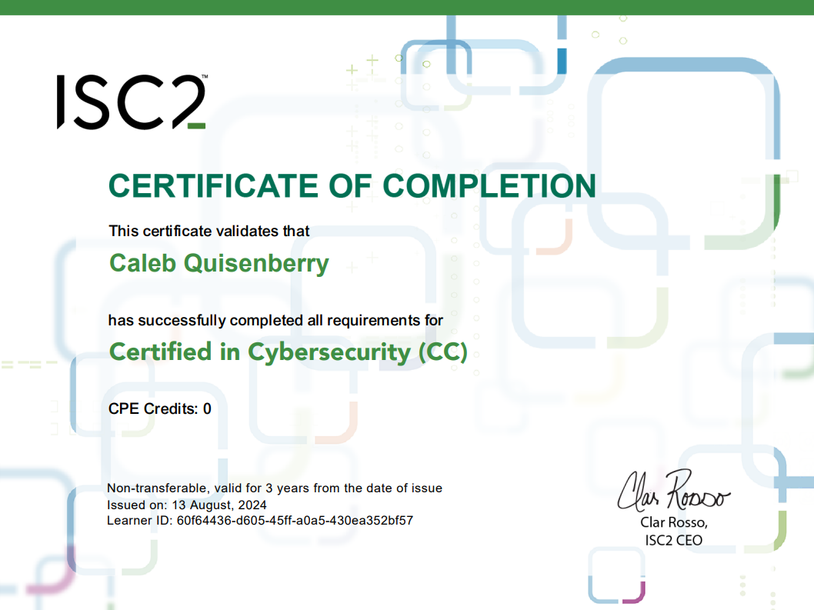

Personal and Major-Related Projects
Project 1: Fixed Wireless Access (FWA) Solution
For my Student Innovation Project (SIP), I am developing a modular tower-mounted solution that distributes power and fiber connections to multiple base nodes using a single cable run. This will also be able to monitor the power circuit and alert users to power interuptions.
Recent Certification
The certification is free to take from ISC2, and you become a candidate by achieving it.
